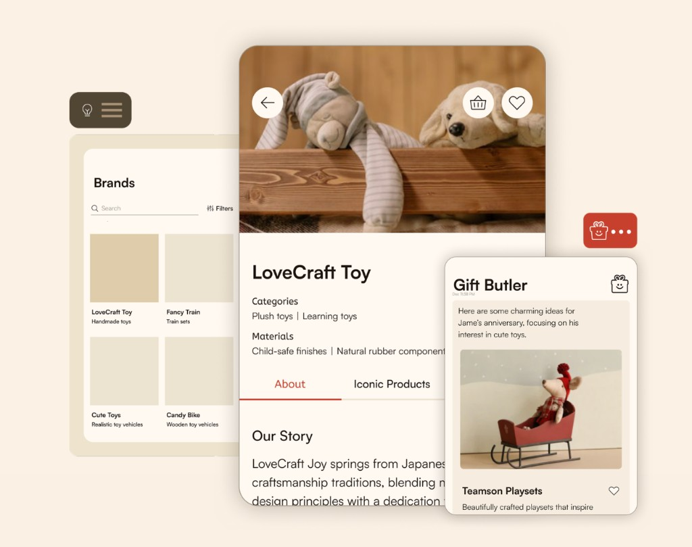

Malwarebytes01
Malwarebytes01
Personas with Purpose

Building data-driven personas for consumer and corporate UX — the foundation later studies stood on.
The supporting research that shaped teams, ops, and product direction.
Malwarebytes01
Building data-driven personas for consumer and corporate UX — the foundation later studies stood on.
 Google02
Google02

A methodology case study featuring Google Shopping SRP competitor audits.
Google03

Visualizing UX research recruiting at scale for Google Ads.
Malwarebytes04

A participatory research program so more teams could sit with users.
Malwarebytes05
Converging four standalone products into one consumer-first security experience.

Product vision from a personal CRM to a gifting platform with light CRM.
Move to uncover the painting. It stays open.